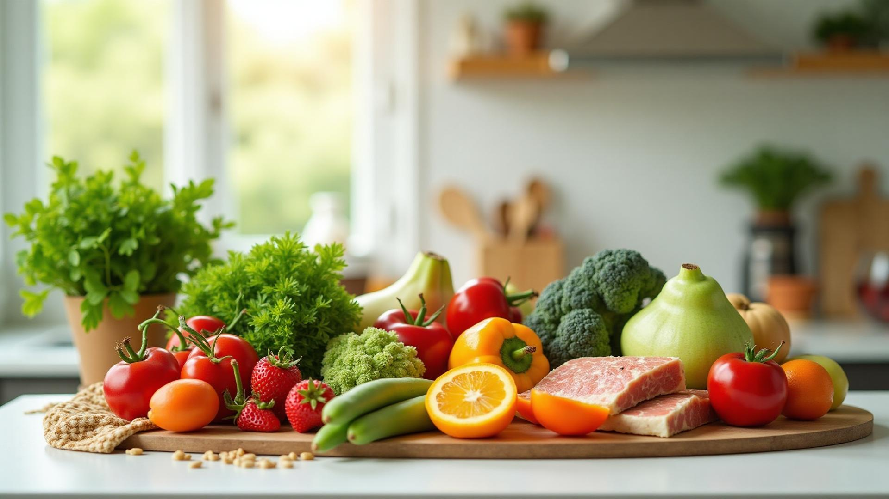

Perca peso com saúde e de forma sustentável! Descubra o método científico para emagrecer definitivamente sem dietas restritivas.
 🎯 Descubra Sua Dieta Personalizada GrátisEmagrecer com saúde não é sobre dietas milagrosas ou restrições extremas. É sobre criar um estilo de vida sustentável que combine alimentação equilibrada, hábitos saudáveis e consistência. O segredo está em criar um déficit calórico moderado enquanto fornece todos os nutrientes que seu corpo precisa.
Segundo estudos científicos, a chave para o emagrecimento duradouro está na combinação de três fatores: alimentação balanceada, exercícios regulares e mudança de mentalidade. Dietas restritivas podem até funcionar no curto prazo, mas 95% das pessoas recuperam o peso perdido em até 5 anos.
Consuma menos calorias do que gasta, mas nunca abaixo do metabolismo basal. O ideal é um déficit de 15-20% das suas necessidades diárias.
Priorize alimentos in natura e minimamente processados. Eles são mais nutritivos, saciam mais e aceleram o metabolismo.
Mantenha equilíbrio entre proteínas (30%), carboidratos (40%) e gorduras saudáveis (30%) para otimizar a perda de gordura.
Beba pelo menos 35ml de água por kg de peso corporal. A água acelera o metabolismo e reduz a retenção de líquidos.
Mantenha horários fixos para as refeições. Isso regula hormônios da fome e melhora a digestão.
Consuma pelo menos 25-30g de fibras diariamente através de vegetais, frutas e grãos integrais.
Nosso teste gratuito leva apenas 1 minuto e cria uma dieta 100% personalizada baseada no seu biotipo, metabolismo e objetivos!
🚀 Fazer Teste Gratuito AgoraDescubra a dieta personalizada que vai te fazer emagrecer sem sofrimento. Teste grátis em 1 minuto!
🎯 Quero Minha Dieta PersonalizadaCombine treino de força (musculação) 3x/semana com cardio moderado 2-3x/semana. O treino de força é especialmente importante para preservar massa muscular durante o emagrecimento.
Durma 7-9 horas por noite. A privação de sono aumenta hormônios da fome (grelina) e reduz os da saciedade (leptina), sabotando sua dieta.
Pratique meditação, yoga ou atividades relaxantes. O estresse crônico aumenta o cortisol, que favorece o acúmulo de gordura abdominal.
Use aplicativos para monitorar calorias e macros nos primeiros meses. Tire fotos semanais e faça medições além da balança.
Coma devagar, mastigue bem e preste atenção nos sinais de saciedade. Leva 20 minutos para o cérebro registrar que você está satisfeito.
Estabeleça objetivos alcançáveis. Perder 4-8kg por mês é um excelente resultado e muito mais sustentável do que promessas milagrosas.
Ingredientes: 150g de peito de frango grelhado, mix de folhas verdes, tomate cereja, pepino, cenoura ralada, 1 colher de azeite, vinagre balsâmico, sal e pimenta.
Modo de preparo: Grelhe o frango e corte em tiras. Monte a salada com todas as folhas e vegetais. Adicione o frango por cima e tempere com azeite, vinagre, sal e pimenta.
Valor nutricional aproximado: 320 calorias | 40g proteína | 15g carboidrato | 10g gordura
Ingredientes: 4 claras de ovo, 1 gema, espinafre, tomate, cebola, queijo cottage, sal e orégano.
Modo de preparo: Bata as claras com a gema. Refogue os vegetais levemente. Despeje os ovos na frigideira antiaderente, adicione os vegetais e o queijo cottage. Dobre ao meio.
Valor nutricional aproximado: 180 calorias | 25g proteína | 8g carboidrato | 5g gordura
Ingredientes: 150g de salmão, 1 batata doce média, limão, alho, azeite, ervas.
Modo de preparo: Tempere o salmão com limão, alho e ervas. Asse no forno a 180°C por 15-20 minutos. Cozinhe a batata doce no vapor ou asse. Sirva com vegetais.
Valor nutricional aproximado: 420 calorias | 35g proteína | 35g carboidrato | 18g gordura
Ingredientes: 1 folha de couve, 1/2 maçã verde, suco de 1/2 limão, gengibre, 200ml água de coco, gelo.
Modo de preparo: Bata todos os ingredientes no liquidificador até ficar homogêneo. Sirva imediatamente.
Valor nutricional aproximado: 80 calorias | 2g proteína | 18g carboidrato | 0g gordura
É importante entender que a perda de peso não é linear. Você pode ter semanas de plateau (estagnação), e isso é completamente normal. O corpo precisa de tempo para se adaptar e reestruturar.
Depende do seu metabolismo basal, idade, sexo, peso atual e nível de atividade física. Em geral, mulheres consomem entre 1.200-1.800 calorias e homens entre 1.500-2.200 calorias para emagrecer. O ideal é calcular suas necessidades individuais e criar um déficit de 15-20%.
Sim, é possível emagrecer apenas com dieta, mas os exercícios aceleram o processo, preservam massa muscular e melhoram a composição corporal. A combinação de dieta + exercícios é muito mais eficaz e saudável.
Sim! Um dia da semana você pode ter uma refeição mais livre (não um dia inteiro). Isso ajuda psicologicamente e pode até acelerar o metabolismo. O importante é não exagerar e voltar à rotina no dia seguinte.
Não! O que engorda é o excesso de calorias, não os carboidratos em si. Carboidratos complexos (integrais) são importantes para energia, funcionamento cerebral e treinos. A questão é escolher as fontes certas e controlar as porções.
Entre 2kg a 4kg por mês é considerado saudável e sustentável. Isso representa cerca de 0,5kg a 1kg por semana. Perdas mais rápidas geralmente envolvem perda de massa muscular e água, não apenas gordura.
Suplementos não são obrigatórios. Uma alimentação equilibrada fornece todos os nutrientes necessários. Whey protein pode ajudar a atingir a meta de proteínas, e um multivitamínico pode ser útil se houver deficiências. Consulte um nutricionista antes de suplementar.
A chave é fazer mudanças sustentáveis, não dietas extremas. Emagreça devagar, aprenda novos hábitos, preserve massa muscular com exercícios e faça uma transição gradual para a fase de manutenção. O emagrecimento deve ser um processo educativo.
Pode ajudar, mas não é mágico. O jejum intermitente é apenas uma estratégia para controlar calorias e pode facilitar o déficit calórico para algumas pessoas. Funciona bem para quem não sente fome pela manhã, mas não é necessário para emagrecer.
Faça nosso teste gratuito e descubra o plano alimentar perfeito para seu corpo e estilo de vida. Resultado em 60 segundos!
🚀 Começar Minha Transformação Agora